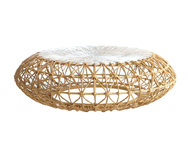
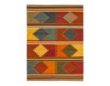
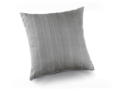

Crafter Biography: Mulakas



My Story:
Mulakas is one the village elderly in the Mangyan tribe. He has 50 years of experience under his belt constructing furniture made of bamboo and rattan. Even after the age of retirement, he still struggles to provide for his wife, children, and grandchildren. Aside from creating one a kind pieces, Mulakas enjoys tending to his tiny herb garden located he shares with his family.
Mangyan Tribe:
The plains of Occidental Mindoro are inhabited by the Tagalogs and the remote forested interior by the Mangyans. Extensive tribal settlements of Mangyans in the province belong to such sub-groups as the Iraya, Alangan, Tadyawan, Buhid, Hanunuo, and Bangon. The Mangyans are simple people. They were once coastal dwellers driven into the mountains to avoid religious conversion by the Spaniards, raids by Moro pirates, and the influx of recent migrants. They now lead a semi-nomadic existence. Mangyans live in loose clusters of up to 20 bamboo huts with thatched roofs and raised floors. They sometimes are away from their families for many weeks in search of food. Men wear a loincloth of pounded bark while the women have a coil of woven nito, a sturdy black vine, and rattan around their hips. Mangyans practice animism and are superstitious.